Part I · Foundations
1. What Is SLAM?
Imagine you are the camera. You are moving through a place you have never seen, and all you get is one image after another.
SLAM, simultaneous localization and mapping, is the problem of working out from those images where you are and what is around you, both at the same time.
What can you work out, and what can you never know? This chapter answers that one step at a time. Every answer forces a new piece into the system, and once all the pieces are in place you have rebuilt SLAM from nothing. SLAM systems differ in their details, so rather than survey them all, this book follows one: kornia-slam. Every piece we derive is a piece of its pipeline.
1.1 Simultaneous localization and mapping
Switch on a robot in a building it has never seen. There is no floor plan and no GPS, only a camera. To do anything useful the robot must keep answering two questions:
localization
- Localization: where am I? The camera's pose, its position and orientation, at every moment. Over time the poses form a trajectory.
mapping
- Mapping: what is around me? A map of the surroundings. In this book's systems the map is a set of 3D points, called landmarks, that the camera can recognize again.
Each question is familiar on its own. Given a floor plan, finding yourself on it is localization. Given known positions to stand at, measuring the room around you is mapping, the way surveyors have always worked. SLAM is the problem in which neither is given. The robot must build the map while using that same map to work out where it is. The two answers are estimated together, simultaneously, and each is only as good as the other.
SLAM is what lets a phone or headset pin virtual objects to a real table, a robot vacuum cover a room without missing a strip, a drone hold its position under a bridge where GPS fails, and a planetary rover know how far it has driven. The sensors differ between these systems: cameras, lidar, inertial sensors, wheel encoders. This book is about SLAM built mainly on cameras, helped by an inertial measurement unit (IMU) and, on ground robots, wheel odometry. The acronym dates from the mid-1990s, but the problem is older: estimating a map and a vehicle's position jointly goes back to work on stochastic maps in the late 1980s.
running example From here on, think from the camera's side. Each time an image arrives, the question is:
What configuration of the world could have produced what I just observed?
The rest of the chapter answers it one obstacle at a time. To reason on paper, we look at the cube scene of Figure 1.1 from above: the cube becomes a square, and its landmarks lie along the square's sides and on the floor around it.
1.2 What a camera can pick out
feature point An image is a grid of a few hundred thousand pixels, and most of them look much like their neighbours: a stretch of plain surface, an even patch of floor. To link one image to the next, the camera needs points it can find again: places that look like nothing else nearby, such as the corner of a printed mark or a speck on the floor. These are feature points.
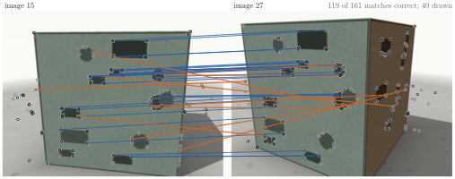
correspondence When the same physical point is found in two images, the pair of pixels is a correspondence. Correspondences are the raw material of SLAM: everything in the rest of this chapter works on them, not on the images. Not all of them are right. In Figure 1.2 about a quarter of the matches pair different points that happen to look alike, and Section 1.7 returns to what that costs.
Why corners? Slide a small window a few pixels in some direction and compare what it sees before and after. On a plain surface nothing changes. On a straight edge, sliding along the edge changes nothing either, so the point's position along the edge is uncertain. Only at a corner does every direction of sliding change what the window sees, so only there is the point pinned down in the image.
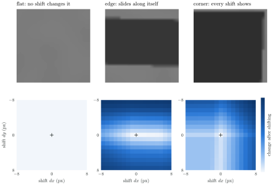
descriptor To find a point again, the system keeps a short summary of what its surroundings look like, a descriptor, and compares summaries between images. kornia-slam uses ORB features: a fast corner test paired with a compact binary descriptor (Chapter 5).
Consequence 1. SLAM does not work on whole images. It works on a sparse set of distinctive points, found in every image and matched between images. The part of the system that does this is the frontend (Part II).
1.3 A pixel is a ray
bearing A camera divides by depth when it projects (Chapter 3), so depth cannot be read back from a pixel. A pixel only fixes a direction from the camera centre. Every point along that ray would have produced the same pixel.
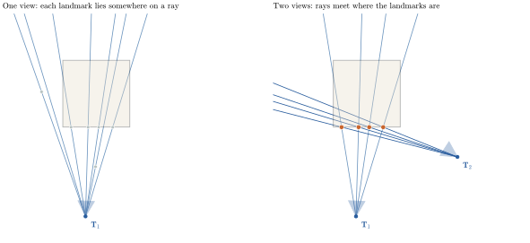
A single image therefore cannot map anything. A second image from a different position can, because the two rays to the same landmark meet at the landmark. The baseline matters: if the camera only rotated between the images, both rays leave the same centre and never cross anywhere useful.
Consequence 2. A camera-only system needs at least two views with enough parallax before it can place a single landmark. This is initialization (Chapter 7). A stereo rig gets its second view for free, from a second camera at a known baseline (Section 3.6).
1.4 Localization and mapping need each other
Section 1.1 claimed that localization and mapping are each easy when the other is solved. The geometry shows why: with part of the state known, the rays do all the work.
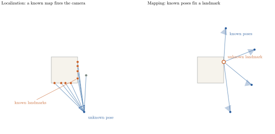
simultaneous But at the start of a run neither half is known. Localizing needs a map, and mapping needs locations. The way out is to estimate both at once: to treat every pose and every landmark as unknown and solve for all of them together. That is the simultaneous in simultaneous localization and mapping.
Consequence 3. The core of SLAM is a joint estimate of poses and landmarks, called bundle adjustment (Chapter 11). Localization against a fixed map (Chapter 8) and triangulation from fixed poses (Chapter 7) remain useful as fast special cases.
1.5 Counting what can be known
Before solving anything, we can ask whether the problem can be solved, by counting. Take views that all see the same points.
- Unknowns. Each pose has 6 degrees of freedom and each point has 3: .
- Equations. Each point in each view gives a pixel, two numbers: .
gauge freedom One more effect reduces the unknowns. Move the whole world, every pose and every point, by the same rigid motion, and every image stays exactly the same. Scale the whole world up or down, and every image still stays the same. No measurement can detect these seven directions, three of rotation, three of translation and one of scale. They are the gauge freedom of monocular SLAM. Subtracting them, the measurements can determine the state only if
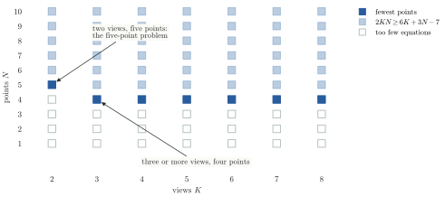
The count reproduces results that took decades to establish. Two calibrated views of five points is the minimal relative-pose problem, the one Nistér's five-point algorithm solves. Three views of four points is minimal as well. But the most important output of the count is the :
Consequence 4. Some things a camera can never tell us. The absolute position and orientation of the map are arbitrary, so a system must fix the gauge, usually by anchoring the first keyframe. A monocular camera also cannot know scale. A monocular map is right up to an unknown factor, and that factor can drift. Metric scale needs another sensor: a stereo baseline (Chapter 3) or an IMU (Part V).
1.6 Noise: from equations to estimation
Real measurements are noisy. To say what that does, we first need names for what is being estimated.
state The state is everything SLAM tries to recover: every camera pose and every landmark position ,
observation model The camera never receives the state. It receives measurements: the pixel at which each visible landmark appears. A measurement is tied to the state by an observation model and some noise :
For a camera, moves a landmark into the camera frame (Chapter 2) and projects it onto the image (Chapter 3).
estimation The noise is why the rays of Section 1.3 almost never meet exactly. With more measurements than unknowns, the equations have no exact solution, and we must choose a state. This turns SLAM from solving equations into estimation, and it is worth naming three objects that are easy to blur together:
| Object | Symbol | What it is |
|---|---|---|
| state | the true configuration of camera and world; unknown | |
| belief | a probability distribution over states, given everything observed so far | |
| estimate | one state chosen to summarize the belief |
maximum a posteriori The usual choice of estimate is the most probable state, the maximum a posteriori (MAP) estimate. By Bayes' rule, and assuming the measurement noises are independent,
If each noise is Gaussian, , then plus a constant. Taking the negative logarithm turns the product into a sum, and the most probable state becomes the one with the smallest weighted squared error:
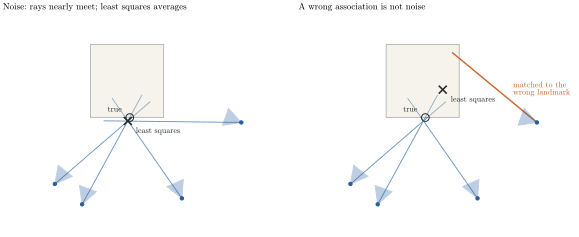
figures/py/slam_noise.py.factor graph The sum has structure. Each term involves only the few variables its measurement touches: a pixel involves one pose and one landmark. A factor graph draws exactly this. Variables are nodes, each term of the sum is a factor, and a factor connects to the variables its residual depends on.
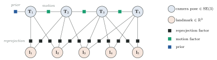
Consequence 5. SLAM is nonlinear least squares over a sparse factor graph. Because contains rotations and a perspective division, it is solved iteratively: linearize, solve a linear system, update, repeat (Chapter 10).
Here is that principle at work in kornia-slam, on the smallest slice of the graph: one camera pose with every landmark held fixed. This is what tracking solves for every new frame.
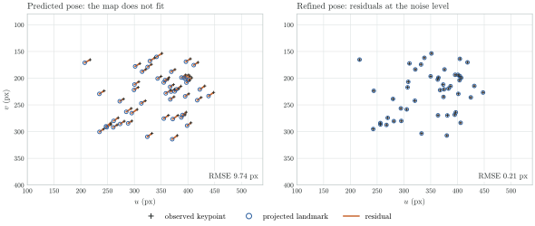
Where this figure comes from
kornia-slam computes; this book only draws. The values were produced by calling
MapProjectionEstimator::estimate_pose at kornia-slam
a9f8c52
with its default configuration, on a synthetic fixture of 48 fixed landmarks and
keypoints with bounded noise. The recording was made by
KSI's trace exporter, which also offers an
interactive replay. Only the input and the returned pose are captured, not the
optimizer's intermediate iterations. No image extraction or map update is involved.
estimate, not belief kornia-slam, like most keyframe systems, stores estimates: one pose per keyframe and one position per map point. It does not keep the full belief. Uncertainty shapes how measurements are weighted, then disappears from the output.
Caution
A map is an estimate, not the world. When an estimate is wrong, nothing in the stored map says so. A system can be confident and wrong. Chapter 19 returns to how we detect this from the outside.
1.7 Which pixel is which?
data association The least-squares problem quietly assumed that every measurement is tied to the right landmark. That tie comes from the matches of Section 1.2, and Figure 1.2 showed that some of them are wrong. Deciding which landmark each feature point belongs to is data association: a second, discrete unknown sitting underneath the continuous one.
The right panel of Figure 1.7 shows why it matters. A correct association with noise costs a little accuracy, and more measurements average it away. A wrong association is not noise at all. It is a false factor, a constraint from a world that does not exist, and least squares gives it full weight.
Consequence 6. Matches must be checked against geometry before they are trusted: pairs that cannot come from one rigid scene are thrown out (RANSAC, Chapter 7). The frontend finds, matches and checks; the backend estimates the state from what survives. The backend still guards itself with robust kernels, which grow more slowly than the square for large residuals (Chapter 10).
1.8 The problem never stops growing
A camera produces twenty or more images a second, and the run does not end. Each image adds a pose, and newly seen landmarks add points. Solving the whole least-squares problem again for every frame becomes impossible within seconds.
Three facts make it tractable:
- Sparsity. Every factor touches only a pose and a landmark, so the linear systems inside the solver are sparse and can be solved far faster than their size suggests (Chapter 11).
- Keyframes. Consecutive frames are nearly identical. Keeping only the frames that add information, the keyframes, shrinks the problem by an order of magnitude (Chapter 9).
- Locality. A new keyframe mostly changes the estimate near itself. Optimizing a small window around it, with its surroundings held fixed, captures most of the benefit.
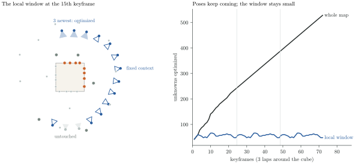
MAX_ACTIVE_KFS = 3 in mapping/bundle_adjustment.rs),
applied here to the cube scene.Consequence 7. Tracking runs on every frame against a fixed map. Mapping runs only on keyframes, and optimizes a local window (Chapter 12).
1.9 Drift, and why revisiting matters
drift A local window keeps the cost bounded, but it has a price. Each new pose is estimated relative to the recent past, so small errors are passed along and compound. A slightly wrong heading displaces every later step, so position error grows faster than the square root of the distance travelled, which is how a pure random walk would grow.
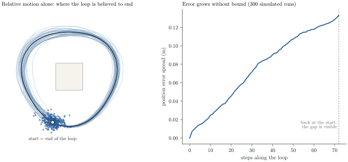
figures/py/slam_drift.py; the noise levels are
illustrative, not measured from kornia-slam.No amount of local optimization removes this, because no measurement in the local window relates the current pose to the start. Only one event does: returning to a place already mapped. Recognizing the place adds a factor between distant parts of the graph. The gap that has opened up becomes a residual, and the optimizer can spread the correction back along the loop.
persistence This only works because the state persists. When a landmark leaves the field of view it is not deleted, so it can be recognized later. A visual odometry system forgets the past and drifts forever. A SLAM system remembers it, and that memory is what makes correction possible:
Consequence 8. A SLAM system keeps a persistent map, recognizes places it has seen before, and corrects the loop when it does: place recognition and loop closure (Part VI).
1.10 The system, derived
Collecting the consequences:
| Starting fact | Consequence | In kornia-slam |
|---|---|---|
| Most pixels are not distinctive | find and match feature points | frontend/ |
| A pixel is a ray | two views with parallax, or a stereo pair | initialization/, stereo.rs |
| Localization and mapping need each other | estimate poses and landmarks jointly | mapping/bundle_adjustment.rs |
| Seven directions are unobservable | fix the gauge; get scale from stereo or an IMU | initialization/, inertial/ |
| Measurements are noisy | nonlinear least squares over a factor graph | tracking/, mapping/ |
| Some matches are wrong | check matches against geometry; robust estimation | initialization/, tracking/ |
| The problem grows forever | keyframes and local windows | tracking/policy.rs, mapping/ |
| Relative estimates drift | a persistent map and loop closure | mapping/map/, loop_closure/ |
Arranged as a data flow, the table is kornia-slam:
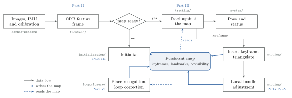
Question
Every block above exists because of an explicit model: of cameras, of noise, of rigid motion. Learned world models also keep a persistent state, but an implicit one, and they learn much of what this chapter derived. Which of these eight consequences should a future system keep as explicit geometry, and which should it learn? The book stays with explicit geometry, and Chapter 20 returns to the question.
Further reading
- H. Durrant-Whyte, T. Bailey. Simultaneous Localization and Mapping: Part I. IEEE Robotics & Automation Magazine, 2006. A tutorial, including the history of the problem.
- C. Cadena et al. Past, Present, and Future of Simultaneous Localization and Mapping: Toward the Robust-Perception Age. IEEE T-RO, 2016.
- F. Dellaert, M. Kaess. Factor Graphs for Robot Perception. Foundations and Trends in Robotics, 2017.
- D. Nistér. An Efficient Solution to the Five-Point Relative Pose Problem. IEEE TPAMI, 2004.
- D. Nistér, F. Schaffalitzky. Four Points in Two or Three Calibrated Views: Theory and Practice. IJCV, 2006.
- L. Carlone, A. Kim, T. Barfoot, D. Cremers, F. Dellaert (eds.). SLAM Handbook: From Localization and Mapping to Spatial Intelligence. Cambridge University Press.
- KSI: Kornia Spatial Intelligence, a research notebook that develops the persistent-state view of SLAM towards world models.
Code references: kornia-slam bda9631; recorded trace: kornia-slam a9f8c52.